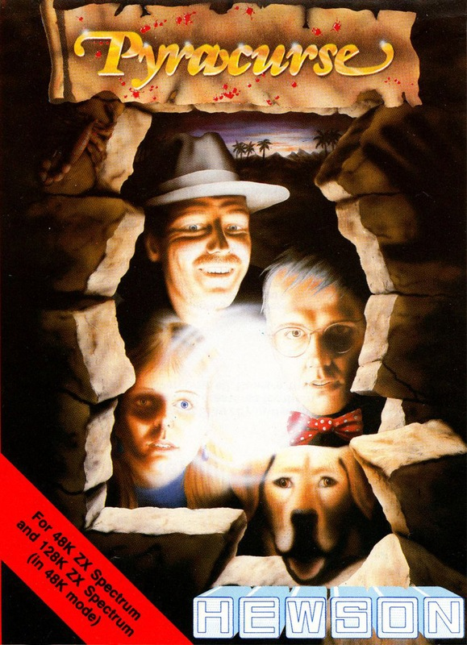
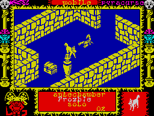

Pyracurse


{kind=link}

| Publisher: | Hewson Consultants |
| Price: | £8.95 |
| Year: | 1986 |
| Source: | CRASH, Issue 31 |

Thousands of years ago the god Xipe Totec reigned over the Sinu people in South America, bringing them knowledge and prosperity. However, he was a barbaric master, striking a cruel bargain with his worshippers. In return for his superior knowledge he demanded ... BLOOD! Periodically, soldiers slaughtered some of the people of Sinu so the god could replenish his life source. Such was the power of Xipe Totec that the people of Sinu still believe in his presence. Many insist that he slumbers within his tomb, waiting for a sacrifice that will awaken him so his reign can continue.

trouble — run away Froz! Wonder what’s
hidden in that chest... and the vase
might conceal something useful too.
Death and mystery surround the tomb of Xipe Totec — no one has ever returned from its clutches. Unperturbed by these stories, explorer Sir Pericles Pemberton-Smythe set out from England to excavate the tomb. Nothing has been heard from him since. Distraught with worry his daughter Daphne decides to investigate. With her fiance, Professor Kite, ‘Legless’ O’Donnell, a drunken hack from the Saturday Post, and Frozbie the dog, Daphne travels to Sinu. The game begins with the rescue party at the entrance of Xipe Totec’s tomb.
Xipe Totec is well protected. Headless guardians patrol the warren-like tomb, and unpleasant scorpions scurry around. If one of the exploration party gets too close, these mobile nasties give chase. Floating skulls terrorise the team and try to stop them entering certain areas of the tomb. Mechanical men and other hideous creatures await those who penetrate deep into the tomb. Contact with a nasty saps a character’s energy and eventually leads to death, but all is not lost: reincarnating fluid, once found, can be used to restore life.
The characters in the game have different personalities: O’Donnell is a tenacious fellow, and the strongest member of the quartet; Daphne is good at finding things, and is a source of support when things are looking tough; the Professor can apply his superior intellect to find ways of using objects found in the tomb, while Frozbie enjoys nothing more than a good scrabble in the dirt — and often unearths useful items.
Pyracurse is controlled in much the same way as Avalon. Using the fire button, menus can be flipped through until you find the action you require. One character is controlled at a time, and he or she can either go solo or lead the other members of the party. If the main character is in Lead Mode, the others follow in a rather shambolic fashion. Each member of the party may carry up to three objects — objects can be picked up by moving onto them, although some artefacts can only be picked up by the appropriate character. A cursor control system allows objects to be used: once an object has been put on the screen it can be moved around.
The action is viewed in isometric 3D through a window on the screen, in such a way that you can see over walls into inaccessible areas while other locations are hidden from view. Full hidden object removal adds to the realism and the screen scrolls in all directions, with the character under the player’s control remaining roughly in the middle of the playing area.
Daphne must find her father — she will be overjoyed if he is alive or very rich if he is dead, for she stands to inherit a considerable fortune. Are you ready to lead an archeological rescue mission?
CRITICISM
“Pyracurse is a good game, and if you’re a big fan of Hewsons’ Avalon and Dragontorc, you’ll like this new game from a new programming team. Just wandering around looking for things is fun, but the size of the game makes it a daunting task to solve. The graphics are very good, with nice ‘hidden view’ effects, and the different abilities of the characters make the game more fun to play. This is a very different type of arcade adventure — but if you didn’t like Dragontorc or Avalon, you might be disappointed.”
“Pyracurse is a welcome relief from the usual arcade adventure type game. It’s a smashing mixture of great graphics and excellent gameplay. The scenario is brilliantly interpreted by the authors. The characters all have individual personalities and you have to get them to work as a team if you want to get anywhere in the game. The graphics are of the usual high Hewsons’ standards and scroll around the screen beautifully. The tune at the start of the game is a very loud two channel simulation — but during the game there are only a few spot effects. I’m sure the atmosphere — which is superb — could have been improved with a little tune throughout the game. Overall, I would say that Pyracurse is one of the most absorbing games around. Every type of games player will love this one.”
“I was expecting a great deal from this game after watching it being played, but when I sat down to it on my own, I found it a little hard to get into. The graphics are certainly very good: there are well detailed backgrounds and ‘moon walking’ characters, but I was surprised to find that there was no view change control — it’s possible to lose things behind walls. Playing the game itself is quite good fun but one feels a little awestruck at the huge task ahead. Generally, this game is quite hard to get into, but if you make the effort, it’s a rewarding arcade adventure.”
COMMENTS
| Control keys: | Up/left A-G, up/right H-ENTER, down/left B-SPACE, down/right CAPS-V, fire Y-P |
| Joystick: | Kempston |
| Keyboard play: | Responsive |
| Use of colour: | Simple, but effective |
| Graphics: | Neat 3D effects, good animation |
| Sound: | Intro tune, plus spot effects |
| Skill levels: | One |
| Screens: | Scrolling play area equivalent to 300 screens |
| General rating: | A quality development on the 3D arcade adventure front |
| Use of computer: | 89% |
| Graphics: | 88% |
| Playability: | 89% |
| Getting started: | 84% |
| Addictive qualities: | 90% |
| Value for money: | 87% |
| Overall: | 90% |